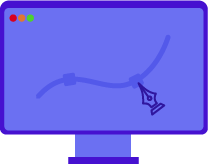

Le BUT MMI est une formation pluridisciplinaire qui s’articule autour de trois axes fondamentaux : le design graphique, le développement et la communication. Inspirés par les pratiques professionnelles, nous formons des étudiants polyvalents sur l’ensemble des corps de métier du web.
Nous encourageons nos étudiants à la mobilité en leur offrant la possibilité de suivre un semestre complet au Canada.
Spécialités

Créations numériques
Développement web
Communication
Le site d’Elbeuf propose deux parcours
Le 4ème semestre marque un changement dans la formation car c’est à ce moment qu’il faut choisir un parcours. Ils sont au nombre de trois : Développement Web & Dispositifs Interactifs, Créations Numériques et Stratégie de Communication Numérique et Design d’expérience. Au sein de l'établissement sont proposés les parcours Développement Web et Création numérique.
Développement web
Création numérique
Formation professionnalisante
Dans le BUT MMI, il y a 10 semaines de stages au quatrième semestre.
Au cours de la troisième année, il vous est possible d'effectuer une alternance. De plus, 16 semaines de stages sont à effectuer au sixième semestre.
Tout au long de ces 3 ans, vous effectuerez plusieurs projets différents afin d’approfondir toutes vos compétences acquises.
Ces projets, se font sous forme de SAE (Situations d'Apprentissage Évaluées), où plus de 100h y sont consacrées chaque semestre.
Ces SAE sont des mises en situations professionnelles où les étudiants se retrouvent face à des problématiques similaires à celles du monde professionnel.
Ils devront donc répondre aux problématiques lors de leurs projets axés sur le développement web (création de sites web), la communication (création d’un événement) et du design graphique (identité graphique)
Modules d’enseignements
Communication & marketing
Perfectionner sa maîtrise de l'anglais
Améliorer son expression orale, sa prise de notes et l’animation de réunions
Créer et comprendre un plan de communication, la stratégie et le marketing digital
Apprendre à gérer et à conduire un projet
Développement
Être capable de développer un site web ou une application (Javascript, PHP et SQL)
Maîtriser l’intégration web (HTML, CSS, ergonomie)
Configurer et gérer des systèmes de gestion de contenu (CMS, Blog, ...)
Création Numérique
Comprendre l’environnement technologique du multimédia (image, son, vidéo)
Maîtriser la configuration d’un hébergement Web ou d’un réseau local (Webmail, CMS, blog)
Proposer et justifier de créations artistiques en lien avec la commande
Programme pédagogique
Au cours de sa formation, l’étudiant développe des compétences pluridisciplinaires tant dans le domaine de la programmation que dans le graphisme ou les réseaux. Son atout principal au sortir de la formation est sa polyvalence dans plusieurs domaines.
Après le BUT
La formation pluridisciplinaire que propose le BUT MMI permet d’accéder à de nombreux domaines dans le milieu du multimédia en commençant par la gestion de projet jusqu’au community management en passant par le développement front-end
Voici une liste non exhaustive des métiers envisageables après le BUT MMI (de niveau bac +3, bac +4, bac +5) :
Motion designer
Infographiste
Monteur vidéo
Graphiste
Chargé de communication
Chef de projet ....
Développeur web
Ux / Ui designer
Web designer
Administrateur réseaux
Community manager
Rédacteur web
....